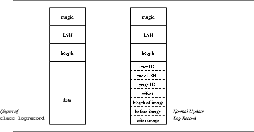

The log consists of a sequence of log records. Each log record has a fixed header portion and a variable data portion. Class logrecord (header file: logrecord.h) declares the basic log record. The fixed portion of the log record contains the following fields:
The data portion of the log record is a sequence of bytes. Class logrecord does not interpret this data in any way. However, the recovery subsystem derives from this class to define several different kinds of log records [normal updates, checkpoint records, commit log records, Compensation Log Records (CLRs), etc.]. Thus, it is the recovery manager that interprets the contents of the data portion of each log record. Derivation ensures that the fixed portion of the log record (which is interpreted by class logrecord) is available in any kind of log record. Figure 1 shows an object of class logrecord and a normal update log record.

Figure 1: Log records. The figure at the left shows an object of the
base class logrecord. The one at the right shows an object of
a class derived from class logrecord. The derived class object
shown corresponds to a normal update log record. For exact
representation and details, see [Ramamurthy & Tsoi 95].
Class logrecord provides methods to get and set the data length. It has a method to return a pointer to the data portion of the log record. It provides read access to the LSN of the log record and write access to friends. Finally, it overloads operator << to output the log record in a human-readable format. The data portion of the log record is dumped in hex and ASCII.